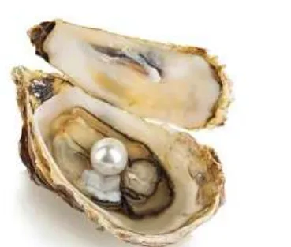

بِطاقَةُ الْمَصادِرِ وَالْمَفاهيمِ: شِهابُ الدّينِ أَحْمَدُ بْنُ ماجِدٍ
الدِّراساتُ الِاجْتِماعِيَّةُ · الصَّفُّ الثّاني · ص 78–84
لِلْجَميعِ

اعْتَمَدَ سُكّانُ الْخَليجِ قَديمًا عَلى الْبَحْرِ (تَجَمُّعٌ كَبيرٌ لِلْمِياهِ الْمالِحَةِ) في الصَّيْدِ وَالْغَوْصِ عَلى اللُّؤْلُؤِ، بِالسُّفُنِ الشِّراعِيَّةِ، وَكانَ الْغَوّاصُ يَسْتَخْدِمُ الْفِطامَ عَلى أَنْفِهِ وَالدّيّينَ في رَقَبَتِهِ لِجَمْعِ الْمَحارِ، وَأَكْسَبَهُمُ الْغَوْصُ الْعَمَلَ الْجَماعِيَّ وَتَحَمُّلَ الْمَسْؤولِيَّةِ.📖 أَقْرَأُ النَّصَّ
جَلَسَ الْجَدُّ وَحَوْلَهُ أَحْفادُهُ، وَكانَ شارِدَ الذِّهْنِ. سالِمٌ: ما بالُكَ يا جَدّي، وَفيمَ تُفَكِّرُ؟ الْجَدُّ: أُفَكِّرُ يا أَبْنائي في زَمَنِ الْغَوْصِ وَرِحْلاتِهِ. أَحْمَدُ: حَدِّثْنا يا جَدّي عَنْ زَمَنِ الْغَوْصِ. الْجَدُّ: كانَ سُكّانُ الْخَليجِ الْعَرَبِيِّ قَديمًا يَعْتَمِدونَ في رِزْقِهِمْ عَلى الْبَحْرِ، وَهُوَ تَجَمُّعٌ كَبيرٌ لِلْمِياهِ الْمالِحَةِ، وَكانوا يَصيدونَ الْأَسْماكَ، وَيَبْحَثونَ عَنِ اللُّؤْلُؤِ في أَعْماقِ الْبَحْرِ، وَكانَتْ هٰذِهِ الْمِهْنَةُ تُسَمّى مِهْنَةَ الْغَوْصِ، حَيْثُ يَغوصُ الْغَوّاصُ في الْبَحْرِ لِجَمْعِ الْمَحارِ. فَمِهْنَةُ الْغَوْصِ مِهْنَةٌ أَبْرَزَتْ أَصالَةَ الْإِنْسانِ الْإِماراتِيِّ، وَأَظْهَرَتْ قُوَّةَ رِجالِ الْخَليجِ الْعَرَبِيِّ. حِصَّةُ: ما الْوَسيلَةُ الَّتي كانوا يَسْتَخْدِمونَها في مِهْنَةِ الْغَوْصِ عَلى اللُّؤْلُؤِ يا جَدّي؟ الْجَدُّ: كانوا يَسْتَخْدِمونَ السُّفُنَ الشِّراعِيَّةَ الَّتي تَعْتَمِدُ في حَرَكَتِها عَلى قُوَّةِ دَفْعِ الرِّياحِ. أَحْمَدُ: وَما الْأَدَواتُ الَّتي يَحْتاجُ إِلَيْها الْغَوّاصُ في رِحْلَتِهِ؟ الْجَدُّ: الْغَوّاصُ يَحْتاجُ إِلى: الْفِطامِ: وَهُوَ مِشْبَكٌ يَضَعُهُ الْغَوّاصُ عَلى أَنْفِهِ لِمَنْعِ دُخولِ الْماءِ إِلَيْهِ. الدّيّينِ: كيسٌ مَصْنوعٌ مِنَ الْخُيوطِ يُعَلِّقُهُ الْغَوّاصُ في رَقَبَتِهِ لِيَضَعَ فيهِ الْمَحارَ الَّذي يَجْمَعُهُ.
كِتابي ص 78–84
📘 كَلِماتي
الْغَوْصُ
جَمْعُ الْمَحارِ 🤿
الْفِطامُ
مِشْبَكُ الْأَنْفِ 👃
الدّيّينُ
كيسُ الْمَحارِ 🧺
الْمَحارُ
فيهِ اللُّؤْلُؤُ 🦪
💡 تَعَلَّمْتُ
🌊الْبَحْرُ: تَجَمُّعٌ كَبيرٌ لِلْمِياهِ الْمالِحَةِ.
🤿الْغَوْصُ لِجَمْعِ الْمَحارِ وَاللُّؤْلُؤِ.
⛵السُّفُنُ الشِّراعِيَّةُ تَتَحَرَّكُ بِالرِّياحِ.
👃الْفِطامُ يَمْنَعُ دُخولَ الْماءِ إِلى الْأَنْفِ.
✅ أُطَبِّقُ
☐أَصْنَعُ عُلْبَةَ الْغَوّاصِ.
☐أُكْمِلُ كِتابي ص 81–84.
🏅 ⭐ أَحْسَنْتَ